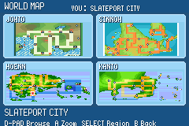
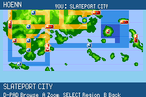

A map worth exploring
Native terrain, routes and town markers across all four regions. Zoom into a region, browse its towns, and find your current location.
A GBA ADVENTURE · VERSION 1.0
Start in Hoenn. Set sail for Kanto, Johto and Sinnoh. Build a new team, meet familiar faces, and carry your adventure across one connected world.
A fan project by Srikar · Built on pokeemerald-expansion

THE WORLD IS OPENING UP
Travel between regions by ferry. On your first visit to a new region, your previous team moves safely into Someone’s PC so you can choose your new starter.
Bring back old favourites when you’re ready: the PC allows up to two Pokémon from other regions in your party. Each regional Pokédex joins your growing collection.

IN THE CURRENT BUILD
Native terrain, routes and town markers across all four regions. Zoom into a region, browse its towns, and find your current location.
Gym rewards include Mega progression. If an older save missed an earned Ring or Stone, revisit a defeated Gym Leader or speak to a Pokémon Center nurse.
Become Champion in two regions to unlock the Dynamax Band. Use it from your Bag to enable G-Max on a compatible Pokémon, then press START while choosing a move in battle.
BEFORE YOU SET OFF
Pokémon World runs in a GBA emulator. Download the finished v1.0 game below and open it in your emulator. Your progress is stored in your own save file.
Download v1.0GBA game · 32 MB · Updated 2 November 2026
Back up your save. Keep the same game filename, restart your emulator, and choose Continue on the Pokémon title screen. Avoid loading a quick state made with an older build.
A Zoom into a region · SELECT Switch regions
D-pad Browse towns · B Back / close
Remove held Mega Stones or Z-Crystals first. Dynamax lasts three turns. Use the Band to turn a compatible Pokémon’s Gigantamax power on or off.
HELP SHAPE THE NEXT UPDATE
Tell us where it happened, what you expected, and the steps to reproduce it.